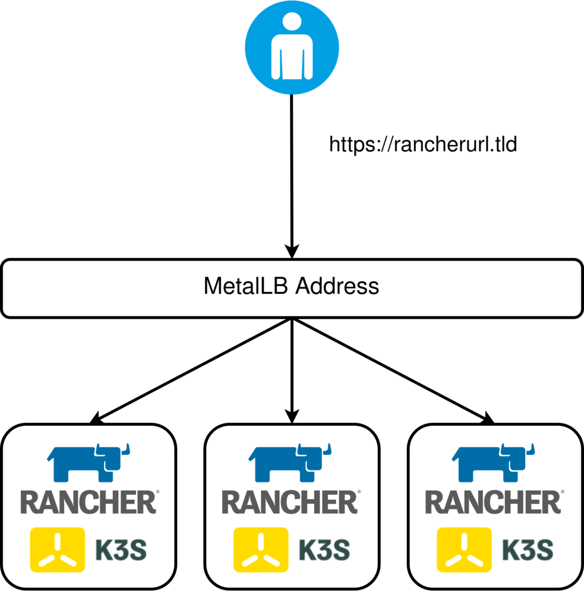

K3s, Rancher and Pulumi
TLDR; Repo can be found here (Be warned, I’m at best, a hobbyist programmer and certainly not a software engineer in my day job)
I’ve been recently getting acquainted with Pulumi as an alternative to Terraform for managing my infrastructure. I decided to create a repo that would do a number of activities to stand up Rancher in a new K3s cluster, all managed by Pulumi in my vSphere Homelab, consisting of the following activities:
- Provision three nodes from a VM Template.
- Use
cloud-initas a bootstrapping utility:- Install K3s on the first node, elected to initialise the cluster.
- Leverage K3s’s Auto-Deploying Manifests feature to install Cert-Manager, Rancher and Metallb.
- Join two additional nodes to the cluster to form a HA, embedded etcd cluster.

The Ingress Controller is exposed via a loadbalancer service type, leveraging Metallb.
After completion, Pulumi will output the IP address (needed to create a DNS record) and the specified URL:
tputs:
Rancher IP (Set DNS): "172.16.10.167"
Rancher url: : "rancher.virtualthoughts.co.uk"
Why cloud-init ?
For this example, I wanted to have a zero-touch deployment model relative to the VM’s themselves - IE no SSH’ing directly to the nodes to remotely execute commands. cloud-init addresses these requirements by having a way to seed an instance with configuration data. This Pulumi script leverages this in two ways:
- To set the instance (and therefore host) name as part of
metadata.yaml(which is subject to string replacement) - To execute a command on boot that initialises the K3s cluster (Or join an existing cluster for subsequent nodes) as part of
userdata.yaml - To install
cert-manager,rancherandmetallb, also as part ofuserdata.yaml
Reflecting on Using Pulumi
Some of my observations thus far:
- I really, really like having “proper” condition handling and looping. I never really liked repurposing
countin Terraform as awkward condition handling. - Being able to leverage standard libraries from your everyday programming language makes it hugely flexible. An example of this was taking the cloud-init user and metadata and encoding it in base64 by using the
encoding/base64package.